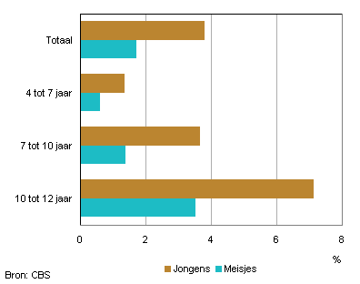
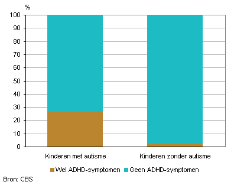

Steeds vaker hoor je dat jonge kinderen op de basisschool te maken hebben met een stoornis in het autistisch spectrum. Zorgen vanuit de ouders en leerkrachten worden al op jonge leeftijd uitgesproken. Maar hoe ga je als ouder en leerkracht nou om met deze situatie? Het Autisme Spectrum Stoornis (A.S.S) is een verzamelnaam voor alle verwante stoornissen zoals het klassieke autisme syndroom van Kanner, stoornis van Asperger, PDD-NOS (pervasive development disorder- not otherwise specified) en MCDD (multiple complex developmental disorder). Kinderen met een stoornis in het autistisch spectrum hebben het niet altijd makkelijk in een onvoorspelbare omgeving zoals een (reguliere) basisschool. Kinderen met autisme leggen meestal heel moeilijk contact en relaties. Ze moeten soms op hun tenen lopen om aan alle complexe verwachtingen die momenteel aan het jonge kind worden gesteld te voldoen. Ook deze kinderen willen graag net zoals de rest zijn, ook al slagen ze daar steeds maar niet in. Kinderen met autisme gaan op een andere manier om met informatie uit de wereld om hen heen. Ze verwerken prikkels op een totaal andere manier. Door deze andere verwerking van prikkels, ervaren zij de wereld om hen heen op een hele andere manier. Dit heeft invloed op hun denken, handelen, voelen en begrijpen. Het autisme is onderdeel van hun mens zijn. Het is dus niet een autist, maar een kind met autisme. Deze kinderen zijn niet minder of beter, maar anders in een unieke wijze. Helaas kan dit wel een aanslag zijn op de ontwikkeling van hun zelfbeeld. Iets dat zich bij jonge kinderen volop ontwikkelt. Hiermee wordt dan ook gelijk de belangrijke rol van de ouders en leerkracht benadrukt om deze kinderen in dit proces zo goed mogelijk te ondersteunen en te begeleiden. Maar dat is uiteraard makkelijker gezegd dan gedaan. Want juist deze kinderen hebben zoveel te bieden! Kinderen met autisme hebben namelijk ook genoeg krachten die gedeeld moeten worden.
Op deze site vindt u verschillende handvatten, feitjes en tips voor zowel ouders als leerkrachten wanneer u te maken heeft met een kind dat een stoornis heeft uit het autistisch spectrum.
Uit onderzoek (CBS) is gebleken dat bijna drie procent van de kinderen een stoornis uit het Autistisch spectrum heeft. Opvallend is dat het twee keer zo vaak voorkomt bij jongens als bij meisjes. Jongens worden dan ook vaker behandeld, namelijk vier keer zo vaak als meisjes. Daarnaast heeft ruim een kwart van de kinderen met autisme ook symptomen van ADHD. Het aandeel neemt toe met de leeftijd. Van de 4- tot 7-jarige kinderen heeft bijna 1 procent volgens de ouders autisme of een aanverwante stoornis. Bij de 10- tot 12-jarigen komt het voor bij 7 procent van de jongens en 3,5 procent van de meisjes.
 Wist je dat…
Geen enkel kind op de basisschool hetzelfde is? Dit geldt natuurlijk ook voor een kind met autisme. de vormen waarin autisme zich uit zijn bij elk kind anders. Autisme ontwikkelt zich ook gedurende het kind ouder wordt. Kinderen met autisme kunnen dus nieuwe “symptomen” ontwikkelen, terwijl andere symptomen juist verdwijnen. Een voorbeeld hiervan zijn de moeilijkheden met de executieve functies bij kinderen met autisme. Executieve functies zijn verschillende cognitieve processen die het denken en handelen organiseren. Eigenlijk kunnen we ook zeggen dat deze functies belangrijk zijn voor het uitvoeren van sociaal en doelgericht gedrag.
Wist je dat…
Kinderen met autisme een enorme interesse in iets speciaals kunnen hebben? Ze steken er veel tijd in om alles over dit onderwerp te weten te komen. Ze hebben vooral een goed oog voor details. Daarnaast vertellen ze graag over hun nieuwe opgedane kennis over dit onderwerp. In het Nederlands noemen we zo’n sterke interesse in één bepaald onderwerp ‘fiepen’. Deze fieps kunnen zeer uitlopend zijn zoals bijvoorbeeld de interesse in treinen, astronomie of alle specifieke namen van de dinosauriërs. Het hebben van zo’n fiep komt statistisch gezien voornamelijk voor bij jongens.
Wist je dat…
Kinderen met autisme de werking van hun eigen lichaam niet als een vanzelfsprekend gegeven ervaren? Een klein wondje waar wat bloed uit komt kan al als extreem ervaren worden. Kinderen met autisme kunnen soms lastig verschillende lichamelijke sensaties goed plaatsen. Net zoals het sneller kloppen van het hart wanneer een kind aan het rennen is. Een kind met autisme kan dit sneller kloppende hart als angstig ervaren. Ook pijnbeleving kan extreem zijn, zo kan er bijna geen pijn gevoeld worden of doet alles juist wel pijn. Ook het leggen van oorzaken en gevolgen zoals het hebben van spierpijn na het sporten is een lastig gegeven.
When forced indoors, I follow a number of sci-fi and fantasy genre movies and television shows, I am an aspiring chef, and I spend a large amount of my free time exploring the latest technolgy advancements in the front-end web development world.